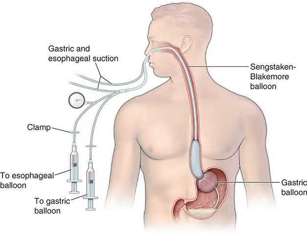
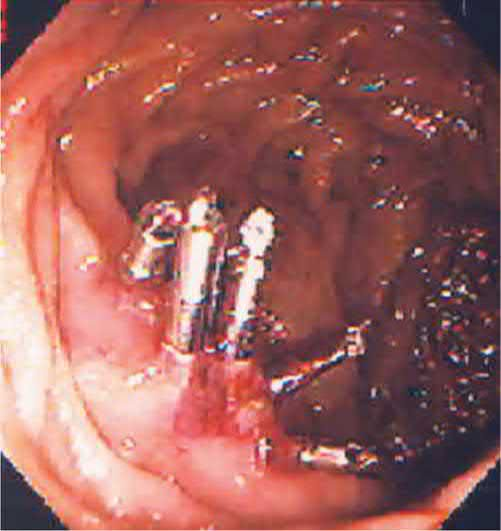
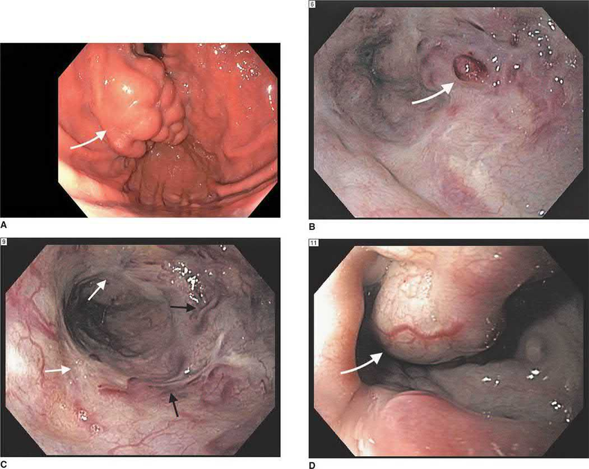
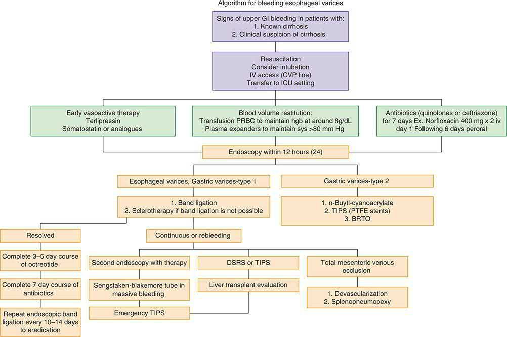

Endoscopic Hemostasis
Summary
- Endoscopic haemostasis comprises injection, thermal, and mechanical techniques applied at oesophagogastroduodenoscopy (OGD) or colonoscopy to control active gastrointestinal bleeding and to treat stigmata that predict rebleeding [1].
- Upper endoscopy is the diagnostic modality of choice for acute upper GI bleeding (UGIB) and, once a bleeding lesion is identified, therapeutic endoscopy achieves acute haemostasis and prevents recurrent bleeding in most patients [2].
- Endoscopic control is successful in the great majority of cases (EGD is approximately 90% effective in controlling the initial bleed), but rebleeding risk is stratified by endoscopic stigmata (modified Forrest classification), and failure of endoscopic therapy is a key indication for angiographic or surgical intervention [2][3].
Definition
Endoscopic haemostasis is the application of injection agents (e.g., adrenaline/epinephrine), thermal devices (heater probe, argon plasma coagulation/APC, electrocautery), and mechanical devices (endoclips/haemoclips, band ligation, endoloops) through an endoscope to arrest active gastrointestinal haemorrhage or to treat a lesion at high risk of bleeding [1][4]. Injection therapy with adrenaline coupled with a second haemostatic technique (thermal coagulation or endoclip application) is the technique of choice for a peptic ulcer with active bleeding or high-risk stigmata [1].
Underlying lesions
The lesions treated by endoscopic haemostasis include peptic ulcer (posterior duodenal ulcers bleed from the gastroduodenal artery), oesophagogastric varices (rupture related to portal hypertension >10 mmHg via hepatic venous wedge pressure), Mallory-Weiss tears (from forceful vomiting, typically on the lesser curvature near the gastro-oesophageal junction), Dieulafoy lesions, and gastric antral vascular ectasia (GAVE) [1][3][5].
Clinical features
- UGIB presents with haematemesis or coffee-ground emesis and melena/tarry stool, with examination findings of tachycardia, orthostatic hypotension, and abdominal tenderness [2].
- Estimated blood loss correlates with vital signs: <15% loss (up to 750 mL) may have normal vitals; 15-30% loss produces widened pulse pressure, decreased urine output, and tachycardia >100/min; 30-40% loss produces hypotension, tachycardia to 120/min, and confusion; >40% loss produces hypotension, tachycardia to 140/min, tachypnoea, and lethargy [2].
- Lower GI bleeding (LGIB) presents with hematochezia (maroon or bright-red blood per rectum), though massive upper or small-bowel bleeding can also present this way, and stops spontaneously in 80-85% of patients [2].
- Patients with liver failure presenting with UGIB are likely bleeding from oesophageal varices rather than an ulcer [3].
Etiology
- Causes of UGIB include peptic ulcer, oesophagogastric varices, arteriovenous malformation, tumour, and Mallory-Weiss tear [2].
- Risk factors include previous UGI bleed, peptic ulcer disease, NSAID use, smoking, liver disease, oesophageal varices, splenic vein thrombosis, sepsis, burn injury, trauma, and severe vomiting [3].
- Causes of LGIB include diverticulosis (most common), angiodysplasia, infectious colitis, ischaemic colitis, inflammatory bowel disease, colon cancer, haemorrhoids, anal fissures, rectal varices, radiation damage, and postsurgical/postpolypectomy bleeding [2].
Diagnosis
- Endoscopic stigmata (modified Forrest classification) for bleeding peptic ulcers: class Ia (spurting/active arterial haemorrhage), Ib (oozing haemorrhage), IIa (nonbleeding visible vessel), IIb (adherent clot), IIc (flat pigmented spot), and III (clean ulcer base) [2].
- Risk of rebleeding on medical management: Forrest Ia/Ib (arterial bleeding + oozing) ~55%, IIa (visible vessel) 43%, IIb (adherent clot) 22%, IIc (flat spot) 10%, III (clean base) 5% [2].
- A parallel hierarchy from the ABSITE Review ranks rebleeding risk at the time of initial EGD as: #1 spurting vessel (60% rebleed chance), #2 visible vessel (40%), #3 diffuse oozing (30%), #4 adherent clot (20%), #5 clean base (<5%) [3].
Risk stratification scores: The Blatchford score calculates the risk of requiring endoscopic intervention without needing an endoscopic finding, and can be calculated at presentation; it uses blood urea, haemoglobin (sex-specific), systolic blood pressure, pulse, presentation with melaena or syncope, and hepatic/cardiac disease, with a score ≥6 associated with >50% risk of needing intervention [4]. The Rockall score predicts mortality using age, shock (heart rate/systolic BP), major comorbidity, diagnosis, and endoscopic stigmata of haemorrhage, with mortality risk ranging from <1% at score 0 to >80% at score 6 [4].
- Investigations: Laboratory workup includes complete blood count, chemistries, type and screen, liver tests, and coagulation studies [2].
- An elevated BUN-to-creatinine ratio (>30:1) suggests an upper GI source [2].
- Upper endoscopy is the diagnostic modality of choice for UGIB, with early endoscopy (within 24 hours) recommended for most patients and within 12 hours for suspected variceal bleeding [2].
- Colonoscopy is the diagnostic test of choice for haemodynamically stable LGIB, identifying a definitive or potential bleeding source in 45-90% of patients [2].
- CT angiography can detect bleeding at a rate of 0.3-0.5 mL/min (sensitivity 85%, specificity 92%) and is the initial test of choice for ongoing haemodynamically significant hematochezia; conventional angiography requires 0.5-1.0 mL/min active bleeding and permits therapeutic embolization; radionuclide scanning is the most sensitive (detecting 0.1-0.5 mL/min) but localises poorly [2].
UK practice on endoscopic haemostasis for acute upper gastrointestinal bleeding is set by NICE CG141, and it prescribes two different scores at two different moments: use the Blatchford score at first assessment, and the full Rockall score after endoscopy [6]. A pre-endoscopy Blatchford score of 0 is the trigger to consider early discharge [6].
- Timing of endoscopy is set by stability, and the unit-level rule is easy to miss.
- Offer endoscopy immediately after resuscitation to unstable patients with severe acute bleeding, and within 24 hours of admission to all other patients [6].
- At service level, units seeing more than 330 cases a year should offer daily endoscopy lists; units seeing fewer should arrange their service according to local circumstances [6].
One drug recommendation is a prohibition and it is the one most often got wrong. Do not offer acid-suppression drugs (proton pump inhibitors or H₂-receptor antagonists) before endoscopy to patients with suspected non-variceal upper gastrointestinal bleeding [6]. PPIs are offered after endoscopy, to patients with stigmata of recent haemorrhage shown at endoscopy [6].
Treatment and Management
- Resuscitation: Large-bore IV access (two 18-gauge or larger cannulae, or a large-bore central line), fluid resuscitation started immediately, and transfusion guided by haemodynamic parameters rather than serial haemoglobin for actively bleeding, hypovolaemic patients; a restrictive transfusion threshold (haemoglobin <7 g/dL) is associated with lower mortality and rebleeding than a liberal strategy [2].
- IV proton pump inhibitors reduce rebleeding rates, length of stay, and transfusion need in high-risk ulcers treated endoscopically [2].
- For known/suspected variceal bleeding, somatostatin analogues (octreotide 50 microgram IV bolus then 50 microgram/hour infusion) or vasopressin/terlipressin are used, along with prophylactic antibiotics in cirrhotic patients [2][5].
- A Sengstaken-Blakemore (or Minnesota) balloon tamponade tube is a temporising measure for uncontrollable variceal haemorrhage, requiring tracheal intubation and confirmation of placement before inflation to avoid oesophageal rupture; it carries a risk of oesophageal rupture and is now rarely used [2][4][5].

- Endoscopic techniques for non-variceal bleeding: Injection of adrenaline (epinephrine) combined with a second haemostatic modality (thermal coagulation or endoclip application) is the technique of choice for actively bleeding or high-risk peptic ulcers, followed by 72 hours of IV proton pump inhibition [1].
- Chronic bleeding from angioectasia/GAVE is most safely treated with argon plasma coagulation because of its controlled, shallow burn depth; haemostatic powders are useful for diffuse bleeding or as salvage therapy [1].
- Combination OGD therapies for UGIB include thermal coagulation, haemostatic clips, adrenaline injection, and banding for varices [4].
- Mallory-Weiss tears are managed by EGD with haemoclips; if bleeding continues, gastrotomy and oversewing of the vessel may be required [3].
- Bleeding duodenal ulcers are treated first with EGD (haemoclips, cautery, adrenaline injection); if EGD fails, surgical options include longitudinal anterior duodenotomy with gastroduodenal artery ligation [3].
- Postpolypectomy colonic bleeding can be localised at colonoscopy and treated with epinephrine injection and haemoclips; immediate post-polypectomy haemorrhage is managed with endoclips or snare-tip coagulation, and delayed haemorrhage (1-14 days post-polypectomy) is usually managed conservatively [1][8].

- Endoscopic techniques for variceal bleeding: Band ligation has replaced sclerotherapy as first-line for oesophageal varices, while thrombin-based glue sclerotherapy is used for gastric/duodenal varices [1].
- Banding and sclerotherapy are approximately 95% effective for oesophageal variceal bleeding [5].
- Sclerotherapy can cause later oesophageal strictures, usually manageable with dilatation [5].
- Propranolol has a role in preventing rebleeding in patients with known varices or a prior variceal bleed but no acute role [5].
- Transjugular intrahepatic portosystemic shunt (TIPS) is used for refractory variceal bleeding after failed endoscopic therapy (typically after a second failed endoscopy), and is generally preferred over emergency surgical shunting because operative mortality can be high in cirrhotic patients [2][5].


Escalation: Surgical indications for non-variceal UGIB include failed repeat EGD, an unstable patient after the first EGD, or rebleeding with an ulcer >2 cm after the first EGD; the single highest risk factor for mortality in non-variceal UGIB is continued or recurrent bleeding [3]. Surgical and interventional radiology consultation should be considered if endoscopic therapy is unsuccessful, if the patient is at high risk for rebleeding, or in all patients with severe UGIB with haemodynamic instability unresponsive to resuscitation [2].
- Where endoscopic haemostasis sits among the ulcer complications: bleeding is the most common cause of ulcer-related death, yet only rarely do patients with a bleeding gastric or duodenal ulcer require an operation today, because the success of endoscopic treatment and medical therapy has selected out a small, high-risk subgroup for the surgeon [10].
- Perforation, not bleeding, is now the more common indication for operation, and the small residual group coming to surgery for bleeding peptic ulcer disease is at higher risk of a poor outcome than ever before, with an operative mortality of around 20% [10].
- Long-term maintenance proton pump inhibitor therapy should be considered in all patients admitted to hospital with ulcer complications [10].
- Obstruction is the complication least amenable to endoscopy: balloon dilatation often transiently improves obstructive symptoms, but many of these patients ultimately fail and come to operation [10].
- Mallory-Weiss tears bleed arterially, which changes the management logic.
- Bleeding may be massive, and vomiting is not obligatory since any acute rise in intra-abdominal pressure will do, including paroxysmal coughing, seizures and retching [11].
- Upper endoscopy confirms the diagnosis by identifying one or more longitudinal fissures in the mucosa of the herniated stomach [11].
- In the majority of patients bleeding stops spontaneously; the stomach should be decompressed and antiemetics given, since a distended stomach and continued vomiting aggravate further bleeding, and endoscopic injection of adrenaline is therapeutic if bleeding does not stop spontaneously [11].
- A Sengstaken-Blakemore tube will not stop a Mallory-Weiss tear, because the pressure in the balloon is insufficient to overcome arterial pressure, a point that distinguishes this lesion sharply from variceal haemorrhage [11].
- Only occasionally is surgery needed: laparotomy with a high gastrotomy and oversewing of the linear tear, after which mortality is uncommon and recurrence rare [11].
- Gastric antral vascular ectasia is the lesion where the usual portal hypertension drugs fail.
- Beta blockers and nitrates, useful in portal hypertensive gastropathy, are ineffective in gastric antral vascular ectasia [10].
- Patients are usually elderly women with chronic gastrointestinal blood loss requiring transfusion; most have an associated autoimmune connective tissue disorder and at least 25% have chronic liver disease [10].
- Non-surgical options are oestrogen and progesterone, and endoscopic treatment with the neodymium yttrium-aluminium garnet (Nd:YAG) laser or argon plasma coagulator; antrectomy is quite effective at controlling blood loss but carries increased morbidity in this elderly group, and patients with coexisting portal hypertension should be considered for TIPS [10].
On endoscopic technique NICE writes one prohibition and one menu, and the phrase "with or without adrenaline" appears in only one of the three options. Do not use adrenaline as monotherapy for the endoscopic treatment of non-variceal upper gastrointestinal bleeding [6]. For endoscopic treatment, use one of the following [6]:
| Modality | NICE wording on adrenaline |
|---|---|
| A mechanical method, for example clips | with or without adrenaline |
| Thermal coagulation | with adrenaline |
| Fibrin or thrombin | with adrenaline |
Table reformats the CG141 endoscopic treatment options [6]. Only the mechanical method may be used alone; thermal and fibrin/thrombin methods are specified in combination with adrenaline.
- After the first endoscopy, NICE separates three situations. Consider a repeat endoscopy, with treatment as appropriate, for all patients at high risk of re-bleeding, particularly if there is doubt about adequate haemostasis at the first endoscopy [6]. Offer a repeat endoscopy to patients who re-bleed, with a view to further endoscopic treatment or emergency surgery [6].
- And offer interventional radiology to unstable patients who re-bleed after endoscopic treatment, referring urgently for surgery if interventional radiology is not promptly available [6].
- Interventional radiology, not surgery, is the named first escalation for the unstable re-bleeder.
- For variceal bleeding the UK sequence is drug, then antibiotic, then scope, then TIPS.
- Offer terlipressin at presentation to patients with suspected variceal bleeding, stopping after definitive haemostasis or after 5 days unless there is another indication [6].
- Offer prophylactic antibiotic therapy at presentation to patients with suspected or confirmed variceal bleeding [6].
- Then the site determines the technique [6]:
| Site | First-line endoscopic therapy | If not controlled |
|---|---|---|
| Oesophageal varices | Band ligation | Consider TIPS |
| Gastric varices | Endoscopic injection of N-butyl-2-cyanoacrylate | Offer TIPS |
Table reformats the CG141 variceal recommendations [6]. The verbs differ: TIPS is something to consider after failed band ligation but is offered after failed glue injection for gastric varices.
- The antiplatelet and anticoagulant recommendations are frequently reversed in examinations. Continue low-dose aspirin for secondary prevention of vascular events in patients in whom haemostasis has been achieved, but stop other NSAIDs, including COX-2 inhibitors, during the acute phase [6].
- Clopidogrel is not a unilateral decision: discuss the risks and benefits of continuing it with the appropriate specialist, for example a cardiologist or stroke specialist, and with the patient [6].
- Offer prothrombin complex concentrate to patients taking warfarin who are actively bleeding, and do not use recombinant factor VIIa except when all other methods have failed [6].
On transfusion, base decisions on the full clinical picture, recognising that over-transfusion may be as damaging as under-transfusion; do not offer platelet transfusion to patients who are not actively bleeding and are haemodynamically stable [6]. Finally, for prevention rather than treatment, offer acid-suppression therapy for primary prevention of upper gastrointestinal bleeding in acutely ill patients admitted to critical care, using the oral form if possible [6].
Surgical salvage
- Surgery for bleeding gastric ulcer aims first at haemorrhage control (excision of the ulcer with repair, e.g., wedge resection, or distal gastrectomy with reconstruction for lesser-curvature ulcers) since 4-5% of benign-appearing ulcers are malignant [2].
- Surgery for bleeding duodenal ulcer involves anterior longitudinal duodenotomy across the pylorus with figure-of-eight ligation of the gastroduodenal artery proximally and distally in the ulcer crater, plus a U-stitch for the transverse pancreatic branch, closed as a Heineke-Mikulicz pyloroplasty, classically with truncal vagotomy if the patient is stable [2][3].
- For refractory variceal bleeding, surgical portosystemic shunts (selective, e.g., distal splenorenal; or nonselective, e.g., portocaval, mesocaval) or, rarely, devascularisation procedures (e.g., the Sugiura procedure) are used when endoscopic and TIPS options fail or are unsuitable; devascularisation carries perioperative mortality of 12.7% and long-term survival strongly dependent on Child-Pugh class [2].
- Transcatheter arterial embolization (interventional radiology, not surgery) is used when endoscopic therapy fails and the patient is a poor surgical candidate; superselective embolization is feasible in 98% of attempts with a 4.6% complication rate, most commonly bowel infarction [2].
Complications
- Rebleeding after endoscopic control occurs in a substantial minority of patients and risk correlates with the endoscopic stigmata described above (Forrest classification) [2][3].
- Complications of colonoscopic polypectomy relevant to endoscopic haemostasis include haemorrhage (0.3%) and perforation (0.1%) [1].
- Complications of sclerotherapy for varices include oesophageal stricture, usually manageable with dilatation [5].
- Sengstaken-Blakemore tube placement carries a risk of oesophageal rupture if inflated without confirmed correct positioning [2].
- Superselective transcatheter embolization carries a 4.6% complication rate, most commonly bowel infarction or ulceration [2].
- Devascularisation surgery for varices has been associated with operative mortality as high as 100% in Child C patients in some series and 12.7% overall perioperative mortality [2].
Prognosis
- The single highest risk factor for mortality in non-variceal UGIB is continued or recurrent bleeding [3].
- Endoscopic stigmata predict rebleeding risk on medical management, ranging from ~55% (active arterial bleeding/oozing) down to ~5% (clean ulcer base) [2].
- LGIB stops spontaneously in 80-85% of patients, with an overall mortality of 2-4% [2].
- The Rockall score stratifies mortality risk from <1% (score 0) to >80% (score 6) based on age, shock, comorbidity, diagnosis, and endoscopic stigmata [4].
- Long-term survival after devascularisation surgery for varices depends on Child-Pugh class at the time of the procedure: 44% in Child A, 22.5% in Child B, and 0% in Child C patients in one series [2].
References
- Bailey & Love's Short Practice of Surgery, 28th ed., Ch. 9
- Sabiston Textbook of Surgery, 22nd ed., Ch. 98
- The ABSITE Review, 2022, Ch. 30
- Oxford Handbook of Clinical Surgery, 5th ed., Ch. 8
- The ABSITE Review, 2022, Ch. 31
- NICE Clinical Guideline CG141: Acute upper gastrointestinal bleeding in over 16s: management (2012, updated 2016), 1.1.1; 1.1.2; 1.2.2; 1.2.3; 1.2.5; 1.2.7; 1.3.1; 1.3.2; 1.3.3; 1.4.1; 1.4.2; 1.4.3; 1.4.4; 1.4.5; 1.4.6; 1.4.7; 1.5.1; 1.5.2; 1.5.3; 1.5.4; 1.5.5; 1.5.6; 1.6.1; 1.6.2; 1.6.3; 1.7.1 www.nice.org.uk
- Maingot's Abdominal Operations, 13th ed., Ch. 61
- Sabiston Textbook of Surgery, 22nd ed., Ch. 40
- Maingot's Abdominal Operations, 13th ed., Ch. 5
- Schwartz's Principles of Surgery: ABSITE and Board Review, Ch. 26
- Schwartz's Principles of Surgery: ABSITE and Board Review, Ch. 25